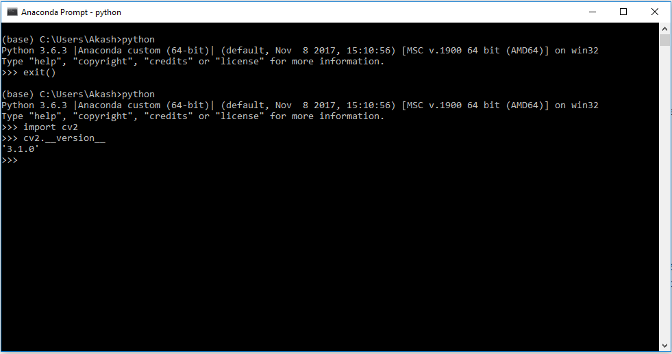

Welcome! In this post I am going to describ how to install OpenCV, an open-source library for
computer vision in python on Windows. OpenCV is a great library to handle most of the Computer Vision projects.
Let's get started to install it in python on windows
Step 1: Install Anaconda- Download Anconda from here
- Run .exe file and install it successfully
To install OpenCV open Anaconda terminal and execute following instructions:
conda install -c conda-forge opencv
press 'y' and hit enter, downloading will get started.
Step 3: Check the installation
After installing the library, check whether it is successfully installed or not, open Anaconda terminal and execute following command to open python
python
Now, check the installation by getting version of OpenCV
>>import cv2
>>cv2.__version__
You will get output something like this
